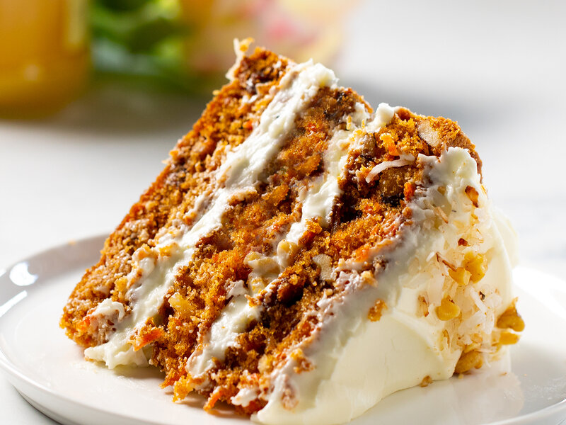

lasagna recipe
lasagna

A sweet moist spice cake, filled with carrots and toasted nuts covered in cream cheese icing
Ingredients
- 2 cups all-purpose flour
- 2 teaspoons baking soda
- 1/2 teaspoon fine sea salt
- 1 1/2 teaspoons ground cinnamon
- 1 1/4 cups (295ml) vegetable oil
- 1 cup (200g) granulated sugar
- 1 cup (190g) lightly packed brown sugar
- 1 teaspoon vanilla extract
- 4 large eggs
- 3 cups (300g) grated peeled carrots
- 1 cup (120g) coarsely chopped pecans
- 1/2 cup (70g) raisins
- 8 ounces (225g) cream cheese
- 2 teaspoons cornstarch
- 1 1/4 cups (140g) powdered sugar
- 1/3 cup (80ml) cold heavy cream
- 1/2 cup (50g) coarsely chopped pecan
Instructions
- Position a rack in the middle of the oven. Preheat the oven to 350°F (176°C).
- Grease two 9-inch round cake pans, line the bottom with parchment paper, and then grease the top. Or grease and flour the bottom and sides of both pans.
Taste and season with additional salt if desired.
- Whisk flour, baking soda, salt, and cinnamon in a medium bowl until very well blended.
- In a separate bowl, whisk the oil, granulated sugar, brown sugar, and vanilla.
- Add the eggs, one at a time, whisking after each one.
- Switch to a large rubber spatula. Scrape the sides and bottom of the bowl, then add the dry ingredients in three parts, gently stirring until they disappear and the batter is smooth.
- Divide the cake batter between the prepared cake pans. Bake until the tops of the cake layers are springy when touched and when a toothpick inserted into the center of the cake comes out clean, 35 to 45 minutes.
- Cool the cakes in the pans for 15 minutes, then carefully turn the cake layers out onto cooling racks.
Remove the parchment paper and cool completely. If you find that a cake layer is sticking to the bottom of the pan, leave the cake pan upside down and allow gravity to do its thing.
- In a large bowl, beat the cream cheese with a handheld mixer on medium speed until smooth and creamy, about 1 minute.
- Beat in the powdered sugar and cornstarch. I like sifting the powdered sugar and cornstarch over the cream cheese to remove lumps. If you do not have a fine mesh sieve, beat in the cornstarch and powdered sugar a 1/4 cup at a time until combined.
- Pour in the heavy cream. Beat on medium speed for 2 to 3 minutes or until the frosting is whipped and creamy. This frosting resembles the texture of whipped cream. Chill covered until ready to frost the cake.
- When the cake layers are completely cool, frost the top of one cake layer and place the second cake layer on top.
- Add the remaining frosting to the top of the carrot cake and use a butter knife or small spatula to swirl the frosting around. Leave the sides of the cake unfrosted. Finish with a handful of nuts on top.